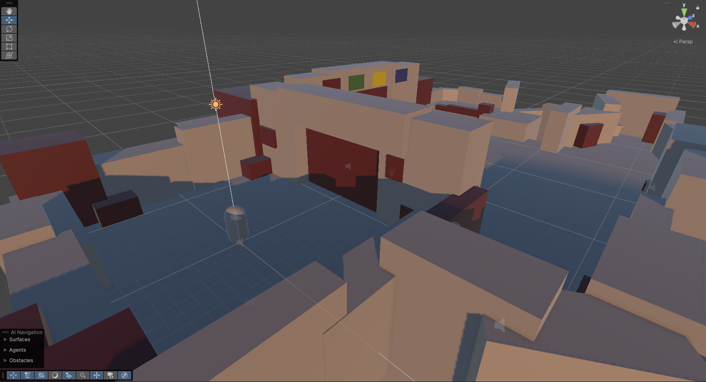
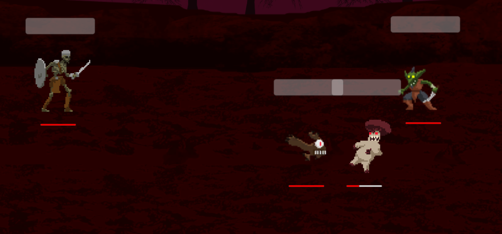

Role: Producer (Flexed: Programmer)
| Role | Member Count |
|---|---|
| Producer | 1 |
| Artists | 7 |
| Sound Engineer | 1 |
| Programmers | 3 (Myself Included) |
Out of each field, one lead was elected to guide other members in their designated roles and streamline overall development.
A semester long class focused on designing and creating a game based off student choice. The class was structured in a way to provide students with as much control as possible, leaving the professors as simply the guard rails and advisors for the producer. The goal was to create a playable demo to then be presented at the end of the semester for everyone to play and give feedback on.
A set of baseline rules and structure were organized as follows:
Most members were brand new to the process of video game production, however many artists have worked on team projects prior. Leveraging that prior knowledge was crucial to starting a smooth workflow between all members.
Many artists inquired on guidance for art direction which created many situations where work was being constantly double and triple checked by one person, causing a lot of strain on the narrative lead who created the original concept of the project.
Scope creep was a very real issue. While this was kept in mind throughout the entire semester, there was still a level where of unknown due to the fact that people had varying skill and speed levels.
Having one sound engineer put a lot of load on their shoulders, it very quickly became a point of bottleneck.
An internship program directed by Dr. Jason Shepherd that tested my abilities to create material for future game development courses and peers. This program tested my ability to quickly create a small project along with a write up that balances both technical implementation and non technical subjects such as design and game structure to students from multiple disciplines. The project I decided to create would be a simple 3D puzzle game with minimal mechanics to provide the easiest vessel for information.

Initial discussions were held to determine the overall direction of the project. I was given an opportunity to brainstorm and pitch multiple ideas and themes that would pair nicely with prior course work that didn't have many overlapping points of subject. I decided on creating a basic 3D puzzle scene that primarily focused on cause and effect mechanics (such as press a button, something happens).
Students would be given the package that I shipped out without most of the scripts that made the project work, this is where the write up came into play to help students rig up the project together and get a basic understanding of how to create the pieces for their own section.
A turn based combat RPG game driven by a dynamic turn execution system that brings flashy and unique sequences of moves with each turn. A capstone project that has allowed me to express multiple concepts such as procedural generation, AI logic, and turn execution systems. Find out more below and/or download the demo from the GitHub build page.
